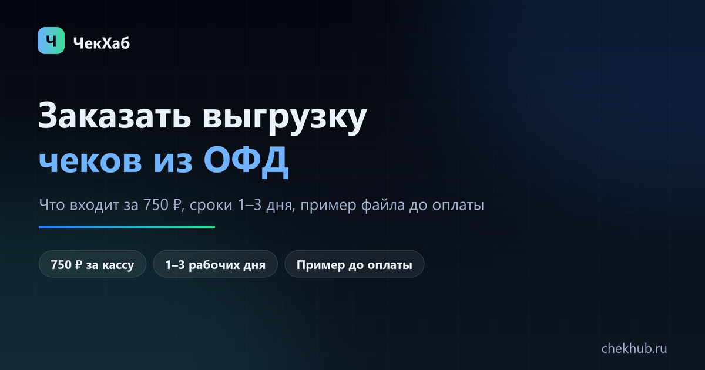

Заказать выгрузку чеков из ОФД: что входит, сроки и цена
Нужен файл с чеками, а не ещё одна инструкция? Здесь всё, что вы получите за 750 ₽: состав файла, сроки, что нужно от вас и что будет, если ОФД не отдаст данные. Отзывов не пишем — вместо них пример файла до оплаты.

Выгрузка — это не «нажать кнопку в кабинете». Одна касса за месяц — пять минут. Десять касс за год — больше сотни файлов, часовые пояса и дубли при склейке. Платите вы именно за это, а не за доступ к кабинету.
Если разбираться некогда
от 750 ₽ за кассу за месяц; год и сеть считаем по количеству касс и месяцев. Срок 1–3 рабочих дня на небольшую сеть.
Гарантия: если ваш ОФД не отдаёт данные за нужный период — вернём предоплату.
Как выглядит результат: пример файла выгрузки (CSV, данные тестовые).
Когда проще заказать, чем делать самому
Выгрузка из кабинета ОФД кажется кнопкой, пока касса одна. Дальше начинается арифметика: десять касс и год — это сто двадцать отчётов, которые надо сформировать, скачать, проверить на кодировку и склеить без дублей. Вот четыре ситуации, в которых выгрузку обычно заказывают:
- Нужен файл для бухгалтерии или налоговой, а не процесс. Отчёт сдают в срок, и возиться с кабинетом некогда.
- Касс несколько. Пять-десять точек дают пять-десять файлов в месяц, каждый со своим номером ККТ и своим часовым поясом.
- Нужны позиции товаров. В реестре чеков позиций обычно нет, а в кабинете они лежат в отдельном отчёте — или не лежат вовсе.
- Период закрыт, а данные нужны. Кабинет показывает последние недели, договор с прежним оператором закончился — надо собирать то, что реально сохранилось.
И честно про обратное: если у вас одна касса за один месяц и нужны только суммы — сделайте это сами, это пять минут в кабинете, инструкция есть в статье чеки из ОФД в Excel. Платить за это не нужно.
Что входит в работу
Выгрузка — это не «сохранить отчёт». В работу входит всё, из-за чего файл потом не сходится:
- Реестр чеков. Одна строка — один фискальный документ: дата и время, касса, точка, смена, тип документа (приход, возврат, коррекция), сумма, НДС, ФН, ФД, ФПД.
- Свод по дням и по кассам. Выручка и возвраты считаются формулами: поменяете данные — своды пересчитаются сами.
- Проверка данных. Дубли по ФН + ФД + ФПД, пропуски в нумерации, обрезанные номера, пустой ФПД, сдвиг даты из-за часового пояса.
- Сверка с кабинетом. Количество чеков и суммы приходов с возвратами сходятся с отчётом ОФД до копейки — иначе файл не отдаём.
- Позиции товаров — в пакете с позициями: наименование, количество, цена, сумма, НДС.
- Инструкция «как открыть и не потерять цифры». Где Excel съедает длинные ФД и ФПД, почему не надо открывать CSV двойным кликом.
- Правки 3 дня после сдачи — если формат не подошёл, переделаем.
Как это выглядит на практике, можно посмотреть до заявки: разбор примера выгрузки и сам файл — Excel (28 КБ) и CSV для 1С (39 КБ). Данные тестовые, структура настоящая.
Цены: что за какую сумму
Прайс сквозной — тот же, что на странице услуг. Ниже — что вы получаете за каждую цифру.
| Что заказывают | Что получаете | Цена | Срок |
|---|---|---|---|
| Выгрузка в Excel / CSV | Реестр чеков за период до месяца по одной кассе, шапки чеков, свод по дням | от 750 ₽ | 1–3 рабочих дня |
| Выгрузка с позициями | Позиции товаров и свод по выручке, несколько касс в одной сводной таблице | от 1 250 ₽ | 2–4 рабочих дня |
| Загрузка в 1С | Файл под вашу конфигурацию и проверка загрузки на тестовой базе | от 1 500 ₽ | 3–5 рабочих дней |
| Автоматическая выгрузка | Скрипт забирает чеки по расписанию в папку, таблицу или базу | от 3 000 ₽ | по объёму |
| Подписка на выгрузку | Одна касса, чеки за месяц, файл до 3-го числа следующего месяца | 1 000 ₽/мес, при оплате 6 мес — 850 ₽/мес | ежемесячно |
| Сверка чеков с банковской выпиской | Сопоставление по датам и суммам, список расхождений: чего нет в ОФД, чего нет в банке | от 1 000 ₽ | по объёму |
| Свод по сменам и кассам | Z-отчёты по всем точкам: точка, смена, выручка, возвраты, число чеков | от 1 000 ₽ | по объёму |
| Восстановление за прошлые периоды | Запрос в поддержку ОФД, разбивка периода, архив прежнего оператора — что реально сохранилось | от 1 000 ₽ | зависит от ОФД |
| Массовая проверка чеков | 100–1 000 чеков: формат реквизитов, дубли, расхождения | от 500 ₽ | 1–2 дня |
| Консультация 30 минут | Разбор вашей выгрузки или расхождения; при заказе засчитываем в стоимость | 500 ₽ | по договорённости |
Что влияет на итог: число касс, глубина периода (месяц, квартал, год), нужны ли позиции и в каком ОФД стоит касса. Цифру «от» мы не растягиваем: если задача упирается в тариф оператора, скажем это до оплаты, а не после.
Как проходит работа: пять шагов
- Заявка. Два поля: куда ответить и что нужно. Доступ к кабинету на этом шаге не требуется — на странице заявки это написано честно.
- Вводные. Уточняем оператора, номера касс, период и формат. Если чего-то не хватает — говорим сразу, а не в день сдачи.
- Пример до оплаты. Показываем, как будет выглядеть файл и что в нём будет: это снимает главный риск — заплатить за формат, который не подходит.
- Предоплата 50 %. Дальше собираем файл, проверяем дубли и суммы, сверяем с кабинетом ОФД.
- Сдача и правки. Отдаём файл и инструкцию, три дня правим бесплатно, если нужно поменять состав колонок или разбивку.
Если ваш ОФД не отдаёт данные за период — возвращаем предоплату. Это не жест доброй воли, а правило: гарантии описаны на странице о проекте.
Что нужно от вас
- Оператор ОФД — Платформа, Такском, Первый ОФД, СБИС (Saby), Яндекс ОФД, Астрал, е-ОФД, Эвотор как ОФД.
- Номера касс — заводской номер ККТ или РНМ. Если не знаете, где смотреть: инструкция по кабинетам.
- Период — с какого по какое число, и нужны ли позиции товаров.
- Формат — xlsx, csv или файл для 1С. Если не уверены, отдадим оба.
Пароль от кабинета не обязателен. Есть два пути: дать доступ с правами только на чтение (или гостевой вход, если тариф ОФД это позволяет) — либо выгрузить отчёты самому и прислать файлы, а мы соберём из них один нормальный. Второй путь иногда быстрее.
Сколько это займёт и от чего зависит
Сроки в прайсе — рабочие дни, а не «календарные, если всё хорошо». Что двигает срок:
- Тариф ОФД. Часть кабинетов отдаёт не больше месяца за один запрос: год — это двенадцать выгрузок на кассу.
- Число касс. Каждая — отдельный отчёт со своим номером.
- Позиции. Их либо нет в реестре, либо они лежат в отдельном отчёте, который формируется заметно дольше.
- Готовность данных. Если в кабинете видно только последние недели, часть периода придётся запрашивать в поддержке оператора — это уже не наши сроки.
Обратная сторона: когда файл нужен «вчера», честнее сказать сразу, чем обещать. Поэтому в ответе на заявку мы пишем реальную дату сдачи, а не срок из прайса.
Сам или за вас: честное сравнение
| Задача | Своими силами | Что делает ЧекХаб |
|---|---|---|
| Одна касса, месяц, только суммы | 5–15 минут в кабинете ОФД | Не нужно — сделайте сами, это бесплатно |
| Несколько касс, месяц | По файлу на кассу, потом склейка и поиск дублей | Один файл, свод по кассам и точкам, проверка дублей |
| Год | 12 месяцев × число касс, вручную | Собираем период, сверяем контрольные суммы по месяцам |
| Нужны позиции товаров | Отдельный отчёт или API оператора | Позиции в том же файле, отдельный лист или колонки |
| Сверка с банком | ВПР по датам и суммам в Excel, руками | Список расхождений: чего нет в ОФД, чего нет в банке |
| Повторять каждый месяц | Каждый раз одно и то же | Подписка 1 000 ₽/мес или скрипт от 3 000 ₽ |
Если сомневаетесь — начните с консультации за 500 ₽: разберём, что у вас в кабинете, и скажем, что можно сделать бесплатно. При заказе эта сумма засчитывается в стоимость.
Доступы, данные и конфиденциальность
Вопрос, который задают первым, поэтому отвечаем прямо:
- Что нужно. Доступ к кабинету ОФД с правами только на чтение — или файлы выгрузок, скачанные вами.
- Чего мы не спрашиваем. Пароль от банка, от личного кабинета налоговой, коды из SMS. Кабинету ОФД эти данные не нужны, и нам тоже.
- Что делаем с данными. Используем только для этой выгрузки, не публикуем и не передаём третьим лицам, после работы удаляем. По просьбе подписываем соглашение о конфиденциальности.
- Что можно проверить. Файл до оплаты — это не обещание, а тот же формат, который вы получите в заказе.
Гарантии и чего мы не делаем
Гарантии: пример формата до оплаты; предоплата 50 %; если ОФД не отдаёт данные за нужный период — возвращаем предоплату; правки в течение трёх дней после сдачи бесплатно.
Чего не делаем — чтобы не тратить ваше время:
- не «рисуем» и не правим чеки, не подделываем ФН, ФД и ФПД;
- не подсказываем, как обойти 54-ФЗ или скрыть выручку;
- не заходим в кабинет без согласия владельца и не работаем с чужими доступами;
- не берём задачи, где данные придётся добывать взломом или обманом поддержки.
Что дальше
Три пути, все рабочие:
- Оставить заявку — два поля, ответим с ценой и датой.
- Посмотреть прайс и посчитать калькулятором на странице услуг.
- Сначала разобрать пример файла — понять, подходит ли формат, и только потом писать.
Частые вопросы
Сколько стоит выгрузка за год?
Считаем по прайсу: от 750 ₽ за кассу за месяц. Год — это двенадцать месяцев на каждую кассу, поэтому сумму называем после вводных: она зависит от числа касс и от того, отдаёт ли ваш ОФД период целиком или по месяцам.
Нужно ли отдавать пароль от кабинета ОФД?
Нет. Достаточно доступа с правами только на чтение — или вообще без доступа: выгрузите отчёты сами и пришлите файлы, мы соберём из них один. Пароли от банка и налоговой не нужны никогда.
Как быстро будет готов файл?
Excel/CSV — 1–3 рабочих дня на небольшую сеть, с позициями — 2–4, файл для 1С — 3–5. Точную дату пишем в ответе на заявку: она зависит от тарифа ОФД и числа касс.
Можно получить только позиции товаров, без шапок чеков?
Да. Пакет с позициями — от 1 250 ₽: наименование, количество, цена, сумма, НДС. Если нужны и шапки, и позиции — отдадим два листа в одном файле.
А если ОФД не отдаёт данные за нужный период?
Тогда возвращаем предоплату и говорим, что именно сохранилось. Иногда часть периода можно достать через поддержку оператора или архив прежнего ОФД — это отдельная услуга от 1 000 ₽.
В каком виде придёт файл?
xlsx и csv, при необходимости оба: xlsx со сводами и формулами, csv — для загрузки в 1С и Google Таблицы. Пример формата можно скачать до заказа.
С любым ОФД работаете?
С любым, где есть чеки: Платформа ОФД, Такском, Первый ОФД, СБИС (Saby), Яндекс ОФД, Астрал, е-ОФД, Эвотор как ОФД. Если оператор редкий — напишите, посмотрим доступ.
Один чек проверить можете?
Один чек проверяется бесплатно на странице проверки по QR: дата, сумма, ФН, ФД, ФПД и формат реквизитов. Платно — когда чеков сотни и нужна таблица.
Как оплатить?
Переводом или по счёту — как удобнее. Предоплата 50 %, остаток после сдачи файла; реквизиты присылаем в ответе на заявку.